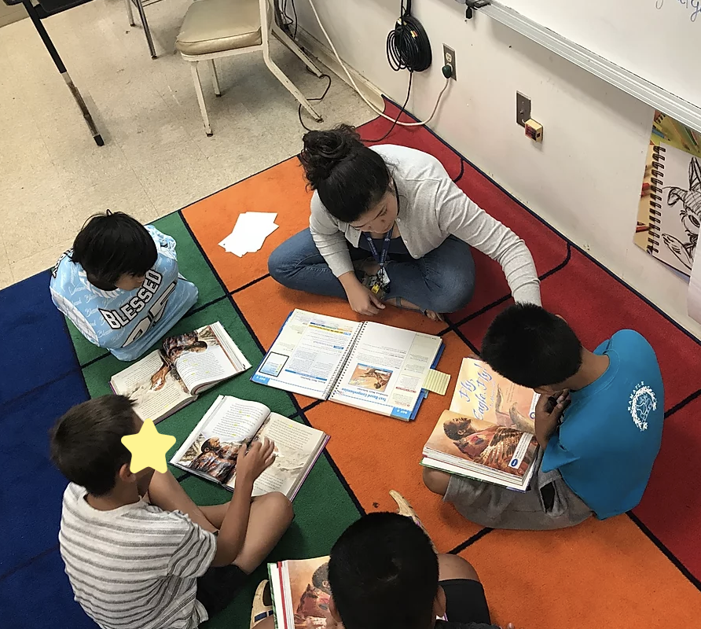

About My Classroom

Students reading on carpet
Breakdown of Student Population in the class Kamaile is a Pre-K to 12 School. There are 900 students at Kamaile. There are five third grade classes, with approximately 100 students in the whole grade. My class has 16 students at the moment. There is an even distribution of girls and boys in my class. Eight girls and eight boys. Two Chukeese boys in the class qualify as ELL. Everyone else identifies as partially Native Hawaiian. No students in my class have an IEP or a 504 plan. In my class eight students are at first grade-level reading, seven students are at a second-grade reading level and one student is at a third-grade reading level.